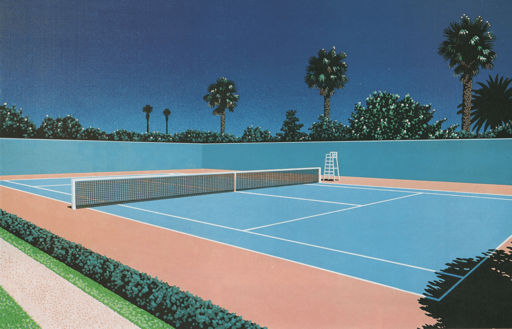
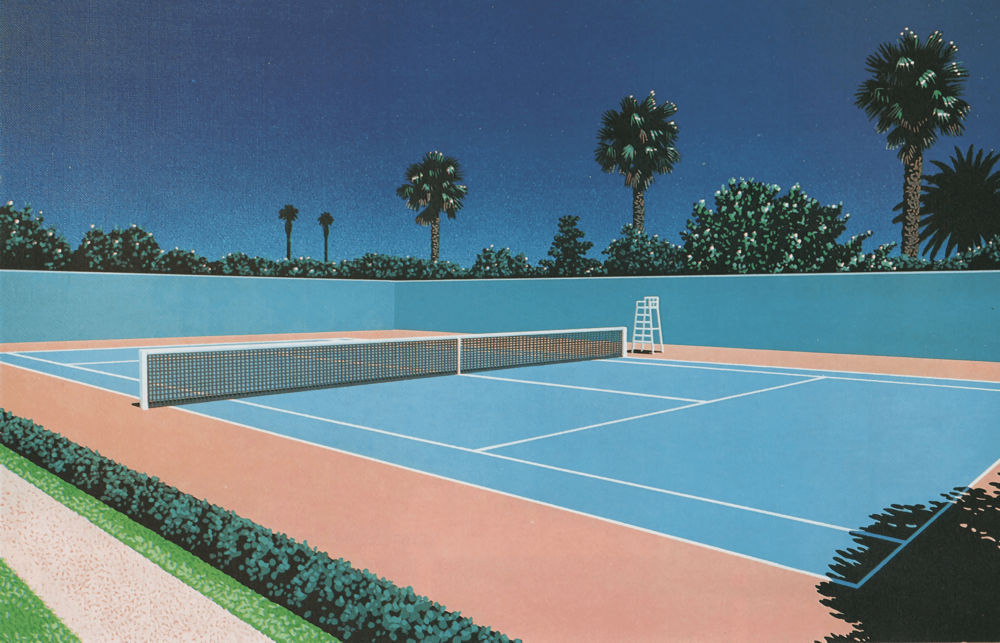
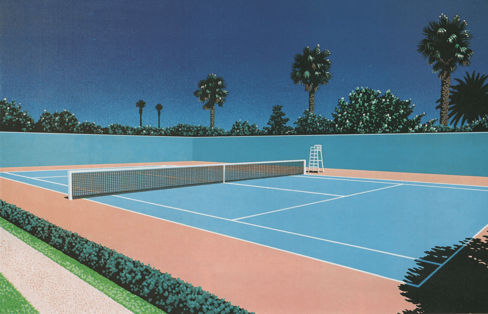

Hiroshi Nagai (Japanese: 永井博, born December 22, 1947) is a Japanese graphic designer and illustrator, known for his cover designs of city pop albums in the 1980's, which established the recognizable visual aesthetic associated with the loosely defined music genre.
Nagai was born on December 22, 1947, in Tokushima Prefecture, Japan. He was inspired to become an artist by his father who enjoyed oil-painted landscapes. Later, Nagai traveled to Tokyo, where he attempted to join art school, in which he was rejected. After a visit to the United States and Guam in 1975, he was impressed by its scenery, which became the starting point of his subsequent style. Gaining an interest in pop art, he took inspiration from English artist David Hockney. Americana became a key component in his art.

Nagai focused on imaginations of a 1950s Americana landscape. Adapting the deep blue skies, relaxed ocean side settings and sleepy nighttime cityscapes from previous pop artists. Hiroshi's paintings convey a feeling of loneliness, yet they also create a relaxing and comfortable atmosphere.